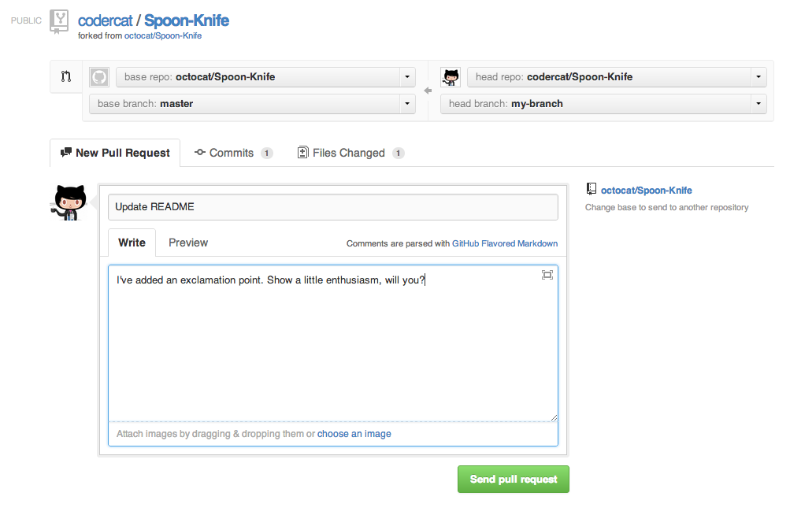

Intro Github
teaching-materials.org/github
Welcome!
What we will cover in this workshop
- What is Github for?
- What is a repository?
- What can I do with my GitHub Account?
If it seems hard, it's because it is

"The version control system that was ... designed to make you feel less intelligent" (source)
Installation and Setup

Installation and Setup
Setup name and email in gitconfig
$ git config --global user.name "Your Name Here"
# Sets the default name for Git to use when you commit
$ git config --global user.email "your_email@example.com"
# Sets the default email for Git to use when you commit
$ git config --list
Setup: Setting the default text editor
By default Git is set up to use Vim as the text editor.
(esc + :q or :q! to get out of Vim)Follow these instructions to change your default text editor to whatever you prefer.
Setup!

BONUS LEVEL: Set up your GitHub account and authentication from Git.
Share Your Code on GitHub

Git + Friends = GitHub
GitHub has over 20 million users,
and over 57 million repositories
What is GitHub for?
- GitHub allows users to host Git repositories publicly and privately
- Open source projects host or mirror their repositories on GitHub
- Push your own code up for others to use or contribute to
- Read, copy, and learn from the code in other people's repositories
- Contribute to open source projects (like the Girl Develop It website!)
GitHub
Create your first remote repository
You will need to be logged into your GitHub account to do this.

GitHub
Create your first repository

GitHub
Set up remote repo to sync with your local repo
After you click the big green button to create your repo, follow GitHub's instructions for next steps.
$ git remote add origin https://github.com/YOUR-GITHUB-USERNAME/REPO.git
$ git push -u origin master
# that -u is an option that signals that you are setting
# a tracking reference to the remote branch as the default;
# you only need to use this flag the first time
Now check out your GitHub repo online!
What can I do with a GitHub Account?
FORK a repo: Find some code you want to use and grab a copy of it.
(Then you'll also need to CLONE the repo — that is, make your own local copy of it)
PUSH to a remote repo you own: post some code you want others to see.
submit a PULL REQUEST to the owner of a repo you'd like to contribute to.
Forking
This

not this
Forking
If you want to use or contribute to a repository, you can fork it.
A fork is just a copy of a repository, saved to GitHub.
Let's practice forking!
Cloning
To get a local copy of the fork you just made, use the git clone command.
$ cd ../
$ git clone https://github.com/your-github-username/tiny-repo.git
$ cd tiny-repo
$ git remote -v
Wait...what?
Establishing a connection to an upstream repo
To sync your fork with the original repo, you need to add another remote named upstream
$ git remote -v
$ git remote add upstream https://github.com/gdisf/tiny-repo.git
$ git fetch upstream
Shared Repos
If team members are contributing to a single repo, each member of the team will want to make sure that she has everyone else's changes before pushing her own changes to the GitHub repo.
Always pull before you push!
Pulling
Commit local changes first
$ git commit -m "My latest commit"
$ git pull origin master
$ git commit -m "Fixing merging conflicts"
$ git push origin master
Pull Requests
- After you fork and clone a repository all pushed changes will go to your fork.
- These changes will not affect the original [upstream] repository!
- If you would like your changes to be incorporated into the original repo, you can submit a pull request.
- A pull request is a GitHub feature that lets you ask the owner of the upstream repo to pull your changes in (since you don't have permission to push)
Starting a pull request
You need to do this on GitHub, not from the command line.

Previewing and sending pull request
Managing pull requests
If you are the owner of repo, you will review and decide whether to merge in the pull requests you receive.
You can learn more from the
Github Collaborating Tutorials.
Editing pull requests
To make changes to an existing pull request, commit changes to the same branch, and push them to GitHub. They'll be added to the PR automatically.
$ git pull origin my-pr-branch
$ git commit -m "Fix typos"
$ git push origin my-pr-branch
Making multiple pull requests
Because any new commits to a branch will be added to that branch's pull request, you need to make any new, unrelated changes to a new branch.
$ git checkout master
$ git checkout -b new-feature-branch
$ git commit -m "Add a fancy new feature"
$ git push origin new-feature-branch
Be sure the new branch is based off of the master branch, and not your other working branch.
Vocabulary Recap
- Git is version control software.
- Github is an online community where you can collaborate with others on projects using Git.
- A repository is a folder where you keep all the files you want to track (normally a fully encapsulated project).
- local refers to the version of the repository on your computer/local development environment
- fork is a copy of someone else's repository that you have
- cloning a repo means taking it from github and putting it onto your local
- origin refers to the version of the repository that it was cloned from (normally on github)
- upstream: if you have forked a repo, this refers to the original parent repository
Vocabulary Recap, cont
- A branch is the name for a separate line of development within a repo, with its own history.
- A commit is an object that holds information about a particular change. You make commits on branches
- HEAD refers to the most recent commit on the current branch.
- A pull request is a means to create an approval process for merging one branch into another on Github
Git Learning Resources
- Try Git from CodeSchool.com
- The Official Docs
- Git Cheatsheet: There are lots of cheatsheets out there, but this one is a visual illustration of Git structure and commands.
- Git Immersion: a great in-depth tutorial with hands-on exercises.
- Pro Git: a very thorough reference. If Git can do it, you'll find it here.
- Atlassian's Git Tutorials: from the creator of (among other things) SourceTree, a free visual Git tool for Mac & Windows.
- Git Workflows: an overview of different ways that teams can use Git.
Questions?